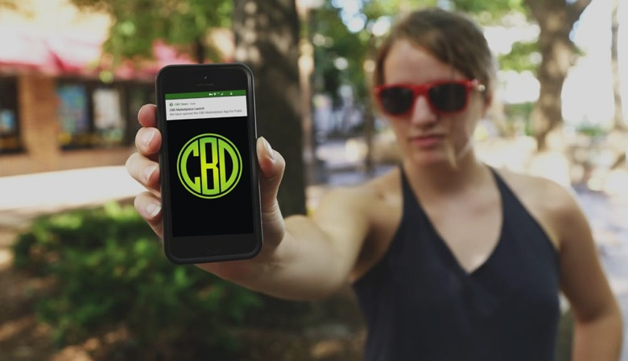

5M CBD Charitable Fund Created
Today, February 3rd 2019 the founders of CBD have agreed to set aside up to 5,000,000 CBD which will be used for charity. We have reserved the following wallet for charitable donations:
TR7UQhgMQsfK8mf6CR1zzBw2pHXGHku9Jn
This wallet will be used to fund charitable projects and donate to CBD related, children's epilepsy, and other neurological research funds that assist in cures and treatments using CBD Products.
CBD Token was created to spread awareness of the healing potential medicinal cannabis oil can provide to patients who suffer from various medical issues, and to make CBD Oil accessible to those who may benefit from using it.
When we created CBD Token our goal was to solve payment issues currently preventing patients from gaining access to CBD Oil both online and in person using the technologies provided by TRON Blockchain such as Poppy PoS and various online wallets.
CBD Token has already made a major impact:
- Today over 5,500 Wallets exist on the CBD Network
- Over 100,000 Transactions have been made
- And we've organically raised over 50,000 TRX
Our main goal is to raise 100,000 TRX to list on an exchange.
However, throughout our project growth we have realized there's a bigger picture issue we can help solve. We can help get CBD Oil to the people who suffer from critical illnesses that need it...
Life is the most beautiful gift from god.
Immel Jolie
(CBD Token Supporter / Brain Cancer Survivor)
Here's how it will work...
We will be donating 1 CBD for every 1 CBD sold during our pre-sale and crowdsale until we hit the 5M softcap required for our charitable fund. By supporting our project you will help bring CBD to people who need it.
We'll use CBD Token from our charitable fund in two ways:
1) CBD Tokens from our charitable fund will be used to purchase CBD from vendors who participate in our Online Marketplace.
2) CBD Tokens will be donated to charitable organizations like Realm of Caring who can purchase CBD from our marketplace.
"We need to make the well-being of patients and accessibility to CBD a priority. There's no reason for patients to suffer because of misconceptions about CBD."
Benefitting organizations will be agreed upon and announced before the program begins funding projects. Again, we are simply making an announcement that the 5 Million CBD Fund has been created and will be used to fund related charitable organizations.
Charitable funds raised so far: 350,000 CBD
By participating in our pre-sale or crowdsale you will help maximize the amount of CBD donated to our charitable fund.